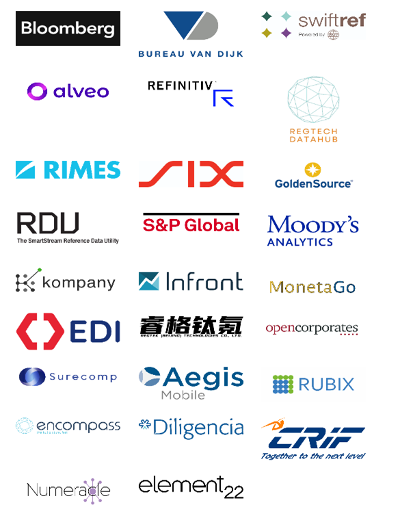

The European Association of Corporate Treasurers (EACT) has been advocating for a digital identity for Corporates for many years now. We believe that, Corporates, like individuals, must have a single identity which help them to identify itself and identify third parties as well in this digital era.
We dream of a "digital passport" like when you rent a car in any country of the world your "international driving license" allow you to lease a car without the hassle of passing a driving test in any country. A non-for profit organization like GLEIF with the support of the FSB and Central banks may be the repository of this "passport" and ensure that they comply with minimal standards agreed by the community.
GLEIF has appointed recently EACT as co-chair of the Vendor and Service Providers Relationship Group, and in particular Guillermo de la Fuente has been elected as the individual representing EACT.
With the implementation of the LEI, corporate treasurers can unlock numerous benefits in areas such as onboarding, fraud reduction, and operational efficiency. For these advantages to be fully realized however, the ecosystem supporting the corporate treasurer - including vendors and services providers offering Treasury Management Services, Enterprise Resource Planning (ERP), Know Your Customer (KYC), FX Platforms and On-line Payments Solutions - must evolve to effectively incorporate the LEI as well.
EACT will be the voice of the corporate treasurer community globally within the leadership of this group. We will ensure that representatives of real businesses understand, and can take advantage of, the myriad benefits associated with the LEI, like in cross-border payments being able to identify legal entities across the whole payments flow, perform efficiently IBAN-NAME checks, improve sanctions screening or make the KYC smoother and lighter which facilitate banking onboarding.
A lack of harmonization within cross-border data flows inhibits the identification of suspicious activity and the exposure of criminal networks. This contributes to a cross-border payments ecosystem that can be broadly characterized by limited trust, high costs, low speed, and insufficient transparency. Fragmentation largely inhibits a coherent and common response to this challenge.
The Financial Action Task Force (FATF) has identified data-sharing and data standardization as key approaches to addressing this lack of transparency. Together, these enable the advanced analytics needed to support effective anti-money laundering (AML) and counter terrorist financing (CFT) initiatives across borders. Clearly the LEI as a universal entity identifier could help here.
The European Union has been progressively strengthening the anti-money laundering (AML) rules in the EU and has placed the legal foundation for the LEI to be used in both the KYC and the account -to-account use cases. Within the AML 7th Directive (still in process) Article 18, the European Commission introduces additional due diligence checks to provide safeguards for obliged entities conducting a business relationship with legal persons and entities. As part of the new customer verification procedure, the text mandates the disclosure of the LEI, where available, when pertaining to the following cases:
EACT) fully supports strong AML requirements and sees the potential to further enhance the balance between security and fraud prevention and the efficiency of rules. Harmonizing KYC obligations would streamline and simplify corporate-bank relationships not only throughout the EU but also globally. This could eventually result in a conceptual idea equivalent to an ‘AML passport’. Corporates could obtain this 'passport' by completing a KYC procedure with one bank, and subsequently use it to establish client relationships more easily with other banks. With the incoming AML framework through regulation, banks will be subject to harmonized KYC requirements, so this could be a viable option to explore. The vLEI would play an important role as a global organizational identity credential.
With the LEI embedded in the critical processes of KYC and account-to-account verification, corporate treasurers can take full advantage of the activities in-between – better corporate invoice reconciliation and enhanced fraud and vendor scam detection. However, vendors and services providers’ support are absolutely critical to enable this evolution.
Furthermore, Swift's Payments Market Practice Group (PMPG) has recently released a paper outlining the benefits of integrating the LEI into ISO 20022 payment messages. The global adoption of the LEI in ISO 20022 payment messages signifies an evolution in financial standards, which has the potential to result in a more secure and interconnected global financial system. As the industry embraces this standard, the positive impact on data quality, risk management, and regulatory compliance becomes increasingly apparent.
The Vendor and Service Providers Relationship Group already provides members with a channel to a vendor community experienced in the LEI. In my role as co-Chair, and as a representative of EACT, I am looking forward to extending direct engagement between members of this group and the corporate treasurer community. I hope it will help to promote better understanding between the two stakeholder groups and support increasing momentum as the vendor community supports global corporate treasurers as they continue to leverage the LEI to reduce fraud in payments.

Within the European Instant Payments rule making process, we find the LEI introduced in the text describing IBAN-NAME matching provisions. The Instant Payments legislation will enable Payment Service Providers (PSPs) to offer the payer the option to use the LEI of the payee, where the payee is a legal person, to enhance the matching process with the payment account identifier. More significantly, the PSD2 revision or PSD3, will extend the IBAN-NAME matching provisions to all credit transfers (not only instant credit transfers as initially suggested), which means PSPs will also be able to offer the payer the option to use the LEI for normal credit transfers.
Guillermo De la Fuente, Board member of the Association of Corporate Treasurers in Switzerland, Board member of the European Association of Corporate Treasurers (EACT) and also International Group of Treasury Associations. Co-Chair of GLEIF's Vendor and Service Providers Relationship Group.
.png "LkSG Relevant for Treasury on a Case-by-case Basis")
The Supply Chain Due Diligence Act (LkSG) creates the legal framework to improve the protection of the environment and human rights along German supply chains. GACT spoke to Dr. Julia Sitter (White & Case LLP) about the relevance and need for action by treasury departments.
Read.png "CMU, The Come-Back!")
The Capital Market Union, which was one of the main objectives of the Vander Leyen Commission, is back in the limelight, and is likely to become a priority for the next Commission next summer.
Read.png "What Will be the Corporate Treasurer's Priorities for 2024?")
General insights into the common priorities of corporate treasurers that will still be relevant in 2024.
Read.png "Counterparty Risk Assessment by Treasurers")
François Masquelier lists some comprehensive steps to best assess counterparty risks.
Read.png "A Whistlestop Tour of DACT’s Autumn Events")
These three events highlighted different facets of treasury, emphasizing expertise and empowering future leaders and women in finance. These gatherings showcase DACT’s commitment to mentorship and knowledge-sharing, treasury innovation and professional excellence in finance.
Read